ggplot(mtcars) + geom_point(aes(disp, mpg, color = factor(cyl))) +
scale_color_manual(values = c("red", "blue", "green"),
guide = guide_legend(title = "Cylinders", title.hjust = 0.5))
In this chapter, we customize legend guides: titles, labels and colorbars using the guide argument with guide_legend() and guide_colorbar().
Guides control title placement, label layout and colorbar sizing for publication-ready legends.
Over-customizing direction, rows and justification in one guide hurts readability. Change one element at a time.
In this section, we will learn to modify
So far, we have learnt to modify the components of a legend using scale_* family of functions. Now, we will use the guide argument and supply it values using the guide_legend() function.
The horizontal alignment of the title can be managed using the title.hjust argument. It can take any value between 0 and 1.
In the below example, we align the title to the center by assigning the value 0.5.
ggplot(mtcars) + geom_point(aes(disp, mpg, color = factor(cyl))) +
scale_color_manual(values = c("red", "blue", "green"),
guide = guide_legend(title = "Cylinders", title.hjust = 0.5))
To manage the vertical alignment of the title, use title.vjust.
ggplot(mtcars) + geom_point(aes(disp, mpg, color = hp)) +
scale_color_continuous(guide = guide_colorbar(
title = "Horsepower", title.position = "top", title.vjust = 1))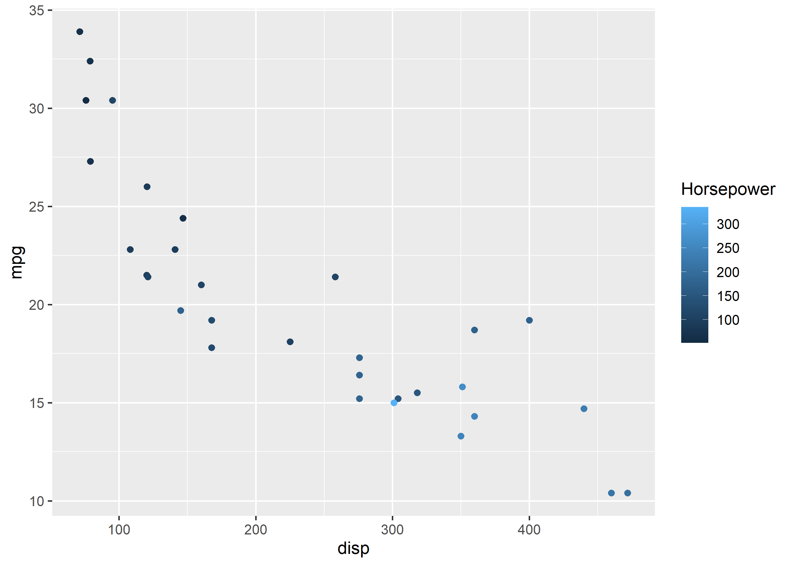
The position of the title can be managed using title.position argument. It can be positioned at:
ggplot(mtcars) + geom_point(aes(disp, mpg, color = factor(cyl))) +
scale_color_manual(values = c("red", "blue", "green"),
guide = guide_legend(title = "Cylinders", title.hjust = 0.5,
title.position = "top"))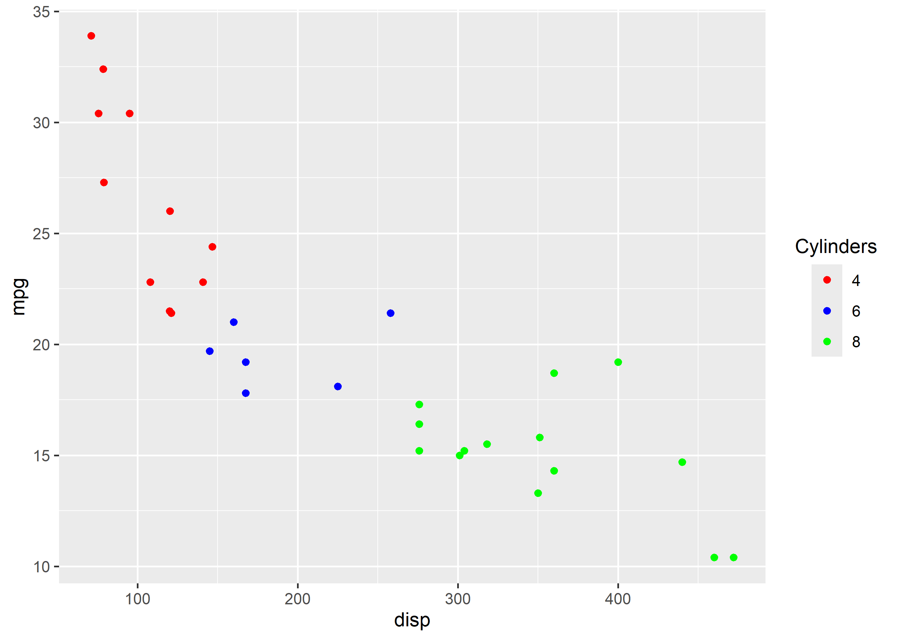
The position of the label can be managed using the label.position argument. It can be positioned at:
In the below example, we position the label at right.
ggplot(mtcars) + geom_point(aes(disp, mpg, color = factor(cyl))) +
scale_color_manual(values = c("red", "blue", "green"),
guide = guide_legend(label.position = "right"))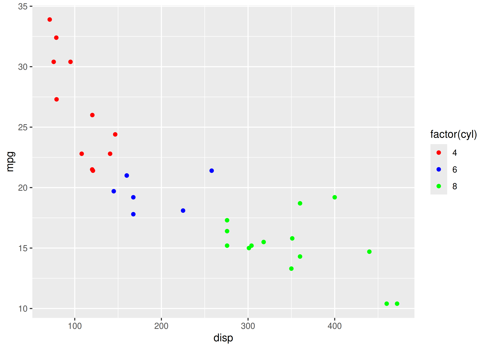
The horizontal alignment of the label can be managed using the label.hjust argument. It can take any value between 0 and 1.
In the below example, we align the label to the center by assigning the value 0.5.
ggplot(mtcars) + geom_point(aes(disp, mpg, color = factor(cyl))) +
scale_color_manual(values = c("red", "blue", "green"),
guide = guide_legend(label.hjust = 0.5))
The vertical alignment of the label can be managed using the label.vjust argument.
ggplot(mtcars) +
geom_point(aes(disp, mpg, color = hp)) +
scale_color_continuous(guide = guide_colorbar(
label.vjust = 0.8))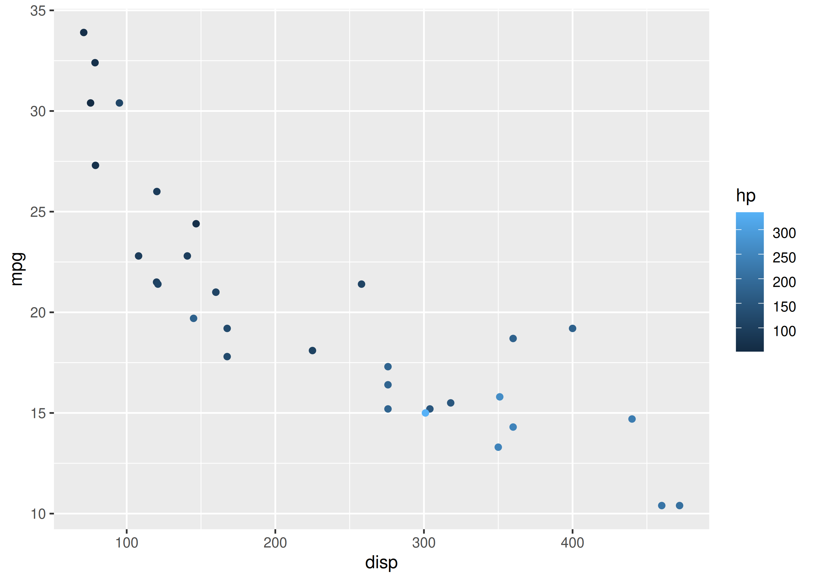
The direction of the label can be either horizontal or vertical and it can be set using the direction argument.
ggplot(mtcars) + geom_point(aes(disp, mpg, color = factor(cyl))) +
scale_color_manual(values = c("red", "blue", "green"),
guide = guide_legend(direction = "horizontal"))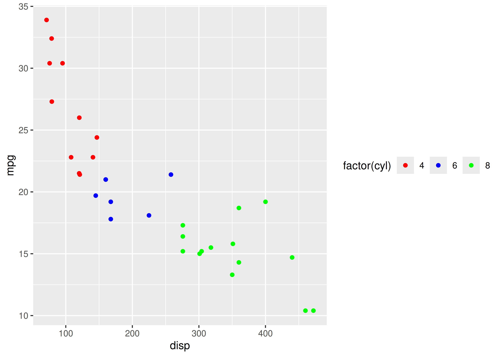
The label can be spread across multiple rows using the nrow argument. In the below example, the label is spread across 2 rows.
ggplot(mtcars) + geom_point(aes(disp, mpg, color = factor(cyl))) +
scale_color_manual(values = c("red", "blue", "green"),
guide = guide_legend(nrow = 2))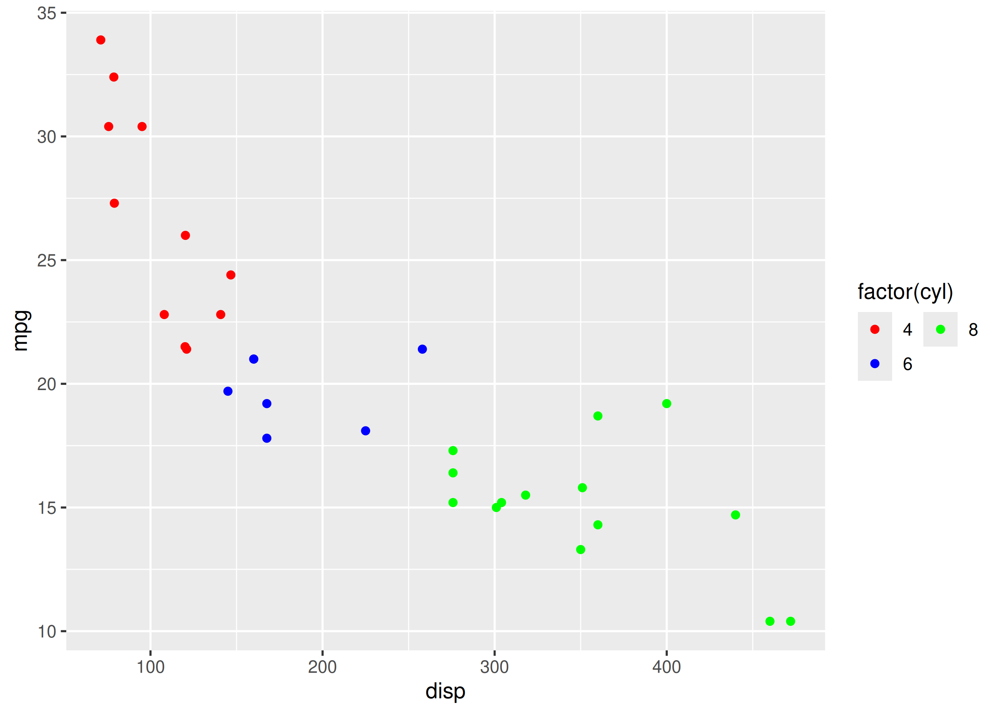
The order of the labels can be reversed using the reverse argument. We need to supply logical values i.e. either TRUE or FALSE. If TRUE, the order will be reversed.
ggplot(mtcars) + geom_point(aes(disp, mpg, color = factor(cyl))) +
scale_color_manual(values = c("red", "blue", "green"),
guide = guide_legend(reverse = TRUE))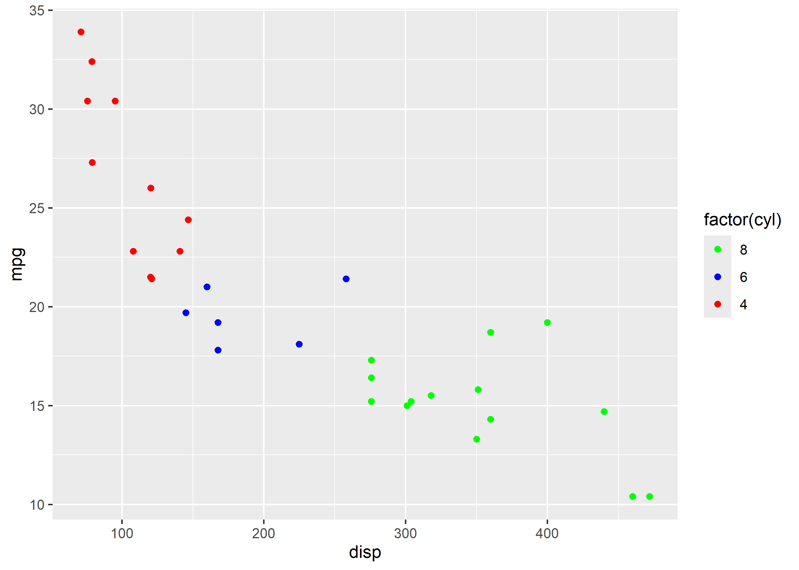
ggplot(mtcars) + geom_point(aes(disp, mpg, color = factor(cyl))) +
scale_color_manual(values = c("red", "blue", "green"),
guide = guide_legend(title = "Cylinders", title.hjust = 0.5,
title.position = "top", label.position = "right",
direction = "horizontal", label.hjust = 0.5, nrow = 2, reverse = TRUE)
)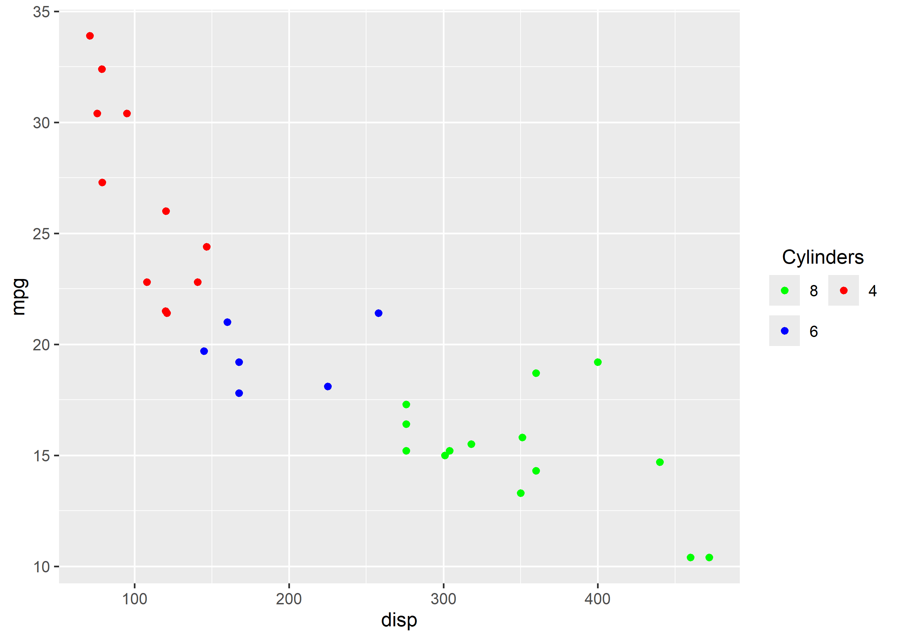
So far we have looked at modifying components of the legend when it acts as a guide for color, fill or shape i.e. when the aesthetics have been mapped to a categorical variable. In this section, you will learn about guide_colorbar() which will allow us to modify the legend when the aesthetics are mapped to a continuous variable.
Let us start with a scatter plot examining the relationship between displacement and miles per gallon from the mtcars data set. We will map the color of the points to the hp variable.
ggplot(mtcars) +
geom_point(aes(disp, mpg, color = hp))
The width of the bar can be modified using the barwidth argument. It is used inside the guide_colorbar() function which itself is supplied to the guide argument of scale_color_continuous().
ggplot(mtcars) +
geom_point(aes(disp, mpg, color = hp)) +
scale_color_continuous(guide = guide_colorbar(
barwidth = 10))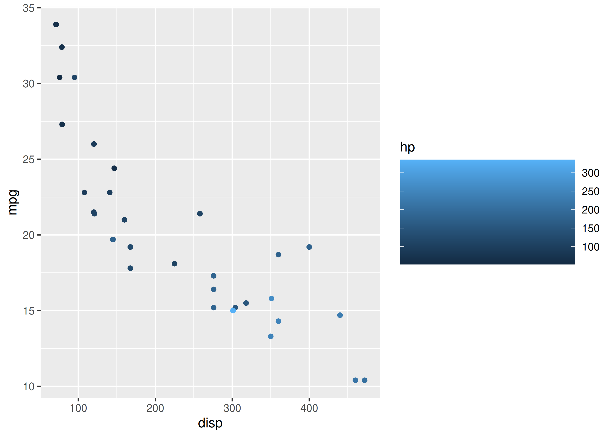
Similarly, the height of the bar can be modified using the barheight argument.
ggplot(mtcars) +
geom_point(aes(disp, mpg, color = hp)) +
scale_color_continuous(guide = guide_colorbar(
barheight = 3))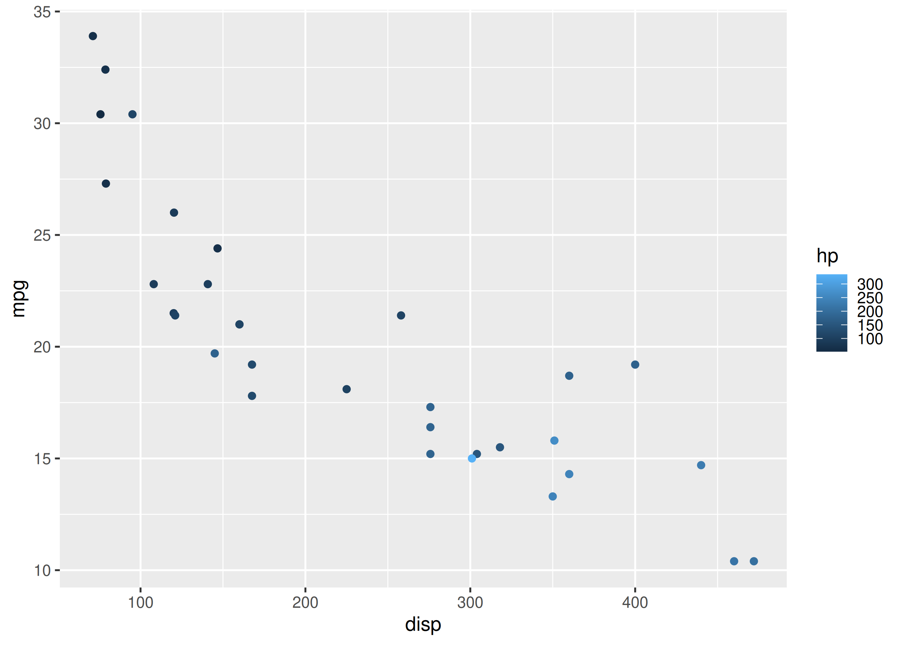
The nbin argument allows us to specify the number of bins in the bar.
ggplot(mtcars) +
geom_point(aes(disp, mpg, color = hp)) +
scale_color_continuous(guide = guide_colorbar(
nbin = 4))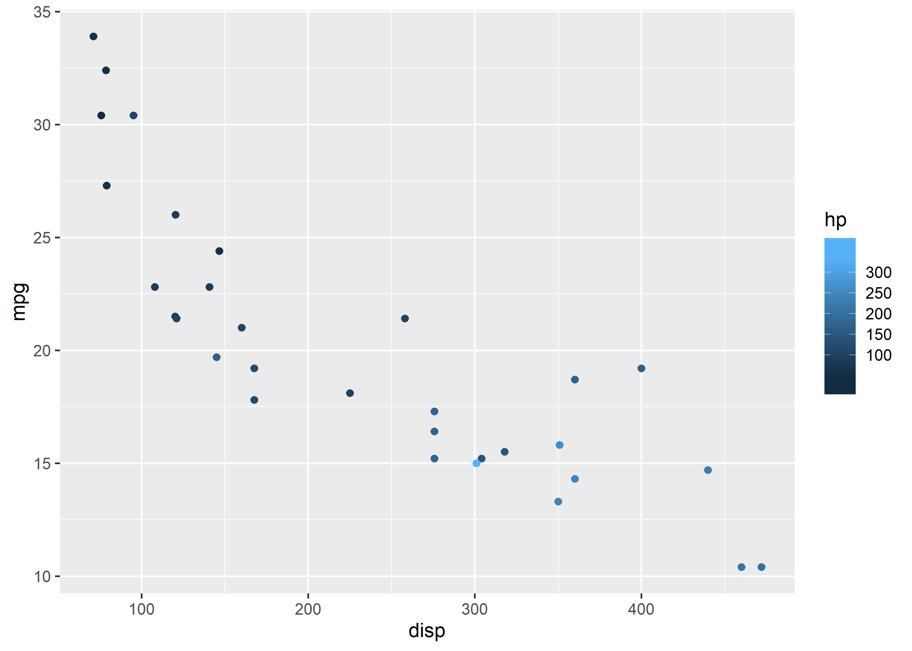
The ticks of the bar can be removed using the ticks argument and setting it to FALSE.
ggplot(mtcars) +
geom_point(aes(disp, mpg, color = hp)) +
scale_color_continuous(guide = guide_colorbar(
ticks = FALSE))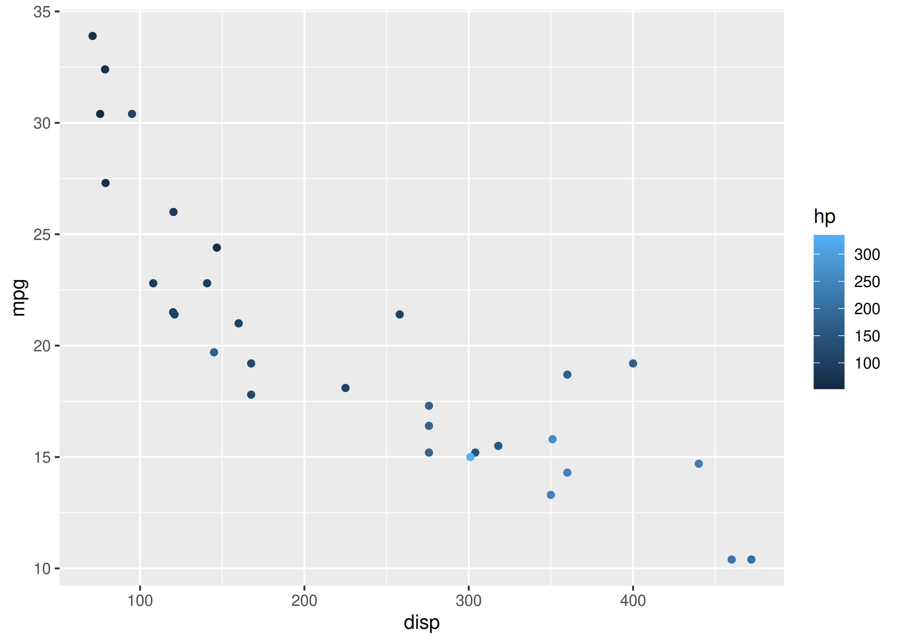
The upper and lower limits of the bars can be drawn or undrawn using the draw.ulim and draw.llim arguments. They both accept logical values.
ggplot(mtcars) +
geom_point(aes(disp, mpg, color = hp)) +
scale_color_continuous(guide = guide_colorbar(
draw.ulim = TRUE, draw.llim = FALSE))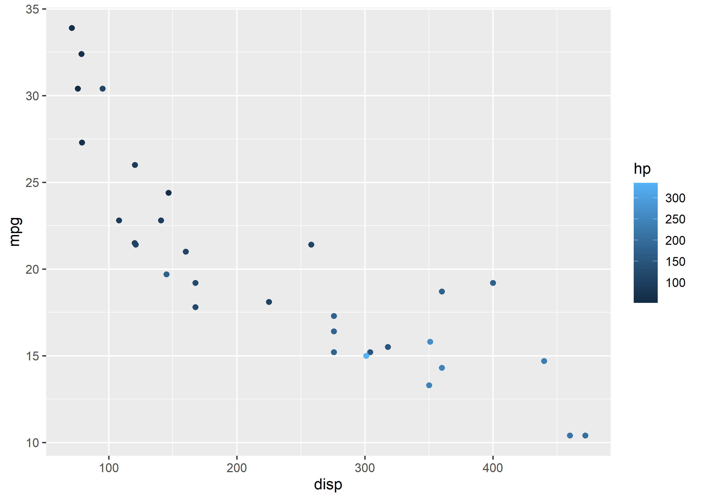
The guides() function can be used to create multiple legends to act as a guide for color, shape, size etc. as shown below. First, we map color, shape and size to different variables. Next, in the guides() function, we supply values to each of the above aesthetics to indicate the type of legend.
ggplot(mtcars) +
geom_point(aes(disp, mpg, color = hp,
size = qsec, shape = factor(gear))) +
guides(color = "colorbar", shape = "legend", size = "legend")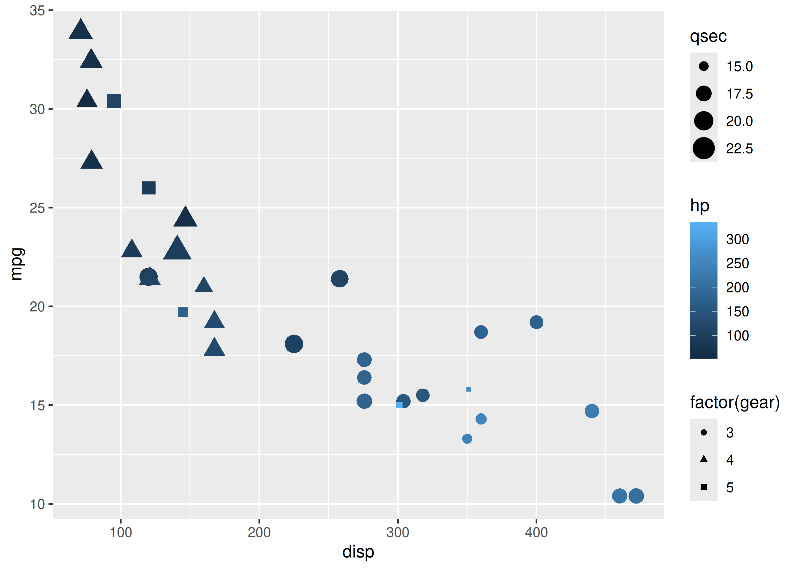
To modify the components of the different legends, we must use the guide_* family of functions. In the below example, we use guide_colorbar() for the legend acting as guide for color mapped to a continuous variable and guide_legend() for the legends acting as guide for shape/size mapped to categorical variables.
ggplot(mtcars) +
geom_point(aes(disp, mpg, color = hp, size = wt, shape = factor(gear))) +
guides(color = guide_colorbar(title = "Horsepower"),
shape = guide_legend(title = "Gear"), size = guide_legend(title = "Weight")
)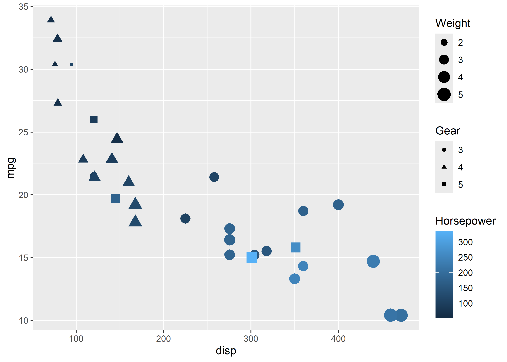
guide_legend(title.hjust = 0.5).label.position.barwidth/barheight for a continuous guide.Worked solutions in solutions/legend.md (attempt first).